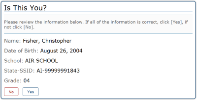
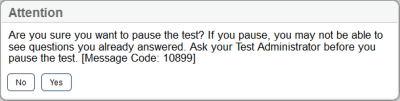
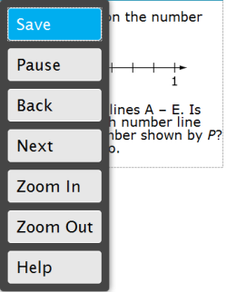
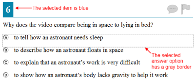
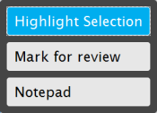
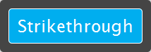

Keyboard Navigation for Students
| Button | Function / Details | Keyboard Commands |
|---|---|---|
| Open the GLOBAL MENU | ||
| Go to the NEXT test page | (or use the Global Menu) |
|
| Go to the PREVIOUS test page | (or use the Global Menu) |
|
| Move to the NEXT ELEMENT (e.g., move to the next item on the same page) | ||
| Move to the PREVIOUS ELEMENT (e.g., move to the previous item on the same page) | ||
| Select OPTION A | To toggle between answer options for selected-response questions: |
|
| Select OPTION B | ||
| Select OPTION C | ||
| Select OPTION D | ||
| PAUSE your test | ||
| END TEST | ||
| HELP GUIDE | ||
| CALCULATOR | ||
| ZOOM IN (increase the size of text and graphics on a page) | or use the Global Menu |
|
| ZOOM OUT (decrease the size of text and graphics on a page) | or use the Global Menu |
|
| SCROLL UP in an area of the test page | ||
| SCROLL DOWN in an area of the test page | ||
| SCROLL to the RIGHT in an area of the test page | ||
| SCROLL to the LEFT in an area of the test page | ||
| Open the CONTEXT MENU (for that passage, question, or answer choice) | ||
| MARK / UNMARK a question for review | ||
| STRIKETHROUGH an answer option | ||
| HIGHLIGHTER* | ||
| SPEAK* (listen to a passage, question, answer option, or specific portion of text) |
*See below for detailed instructions on using this tool with a keyboard.
Test Selection Screens and In-Test Pop-ups
Use these keyboard commands to select options on the pages prior to your test or on pop-up messages that appear during your test. For example, if you see a screen with [No] or [Yes] buttons, you will need to navigate to that button to select it.
Examples of Test Selection Screen and In-test Pop-Up Messages


| Keyboard Command | Function |
|---|---|
| Move to the next button | |
| Move to the previous button | |
| Select the outlined button |
Global Menu
The Global Menu contains all the options displayed along the bottom of the student’s test screen.
- Press the [Ctrl] + [G] keys to access the Global Menu. The menu will appear on the screen. (Make sure you do not have your cursor in a text box.)
- Use the [Up] or [Down] arrow keys on your keyboard to move between options in the menu. Each option will be highlighted as you arrow up or down.
- Press the [Enter] key to select the highlighted menu option.
- Press the [ESC] key to close the Global Menu.
Note: The Global Menu may change based on the test that you are taking. For example, the Global Menu on a Math test may include a Calculator, which you will not see on Reading tests.
Sample Global Menu
Context Menus
The Context Menus contain the options available for each area of a test page. These areas of a test page are called “elements.”
The elements on a test may include include:
- Reading passages
- Test items
- Answer options (A, B, C, and D)
Sample Test Page
Note: This image may not match what you see on your screen.
Each element has its own context menu. To view the context menu for an element, you need to navigate to that element.
- Press the [TAB] key to navigate between test items (and the reading passage, if there is one).
- Press [CTRL] + [TAB] to switch from a test item to each answer option.
- Press the [Ctrl] + [M] keys on the keyboard. The context menu for that element will appear.
- Use the [Up] or [Down] arrow keys on your keyboard to move between options in the menu. Each option will be highlighted as you arrow up or down.
- Press the [Enter] key to select the highlighted menu option.
- Press the [ESC] key to close the Context Menu.
Sample Context Menu for Test Item/Question
Note: This image may not match what you see on your screen.
The context menu for an answer option may show different options than for a test item or reading passage.
Context Menu for Answer Option
Selecting Text with Your Keyboard
These instructions are for selecting text to highlight or have the computer read aloud.
- Place the focus on the element containing the text you want to select. A reading passage, item, or answer choice are the different types of elements that can be on a test screen.
- Press [Ctrl] + [M] to open the context menu.
- Select Enable Text Selection from the list of available options. A flashing cursor will appear.
- Use the arrow keys to move the cursor to the beginning of the text you want to select.
- Press and hold the [Shift] key and use the arrow keys to select your text. The text you have selected will appear shaded.
- Press [Ctrl] + [M] to access the Context Menu.
- Select the feature you want to use for the selected text (e.g., Highlighter or Speak tools).
| Keyboard Command | Function / Details |
|---|---|
| Press the [Tab] key to move between the Object Bank, the buttons at the top of the screen (Delete, Add Point, Connect Line, Add Arrow, Add Line), and the main Answer Space. The “active” space or button will show a border to make it look different. | |
| Press the [Enter] key to move between the objects (images, dots, lines, and arrows) that are in the Answer Space. The “active” object will show a border to make it look different. | |
| Select Object: Press the [Space bar] to select the “active” object or button (the one that shows a border). If you are selecting an object or adding a point, line, or arrow, it will move to the Answer Space, in the top left corner. It will also have a blue border to show that it is still “active.” Delete Object: Use the [Space bar] to delete an object (after you have selected the [Delete Button] option and moved to the object you want to delete). |
|
| Move the object to the left. | |
| Move the object to the right. | |
| Move the object up. For items with an object bank, use the ↑ arrow to navigate between the available objects. The selected object will have a blue background. |
|
| Move the object down. For items with an object bank, use the ↓ arrow to navigate between the available objects. The selected object will have a blue background. |
|
+ [arrow key] |
Move the object a smaller distance (left, right, up, or down). |